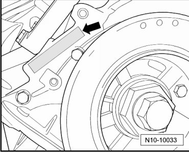

Technical Data
Technical Data
Engine Number
The engine number "engine code" and "serial number " is located next to the vibration damper on the cylinder block under the coolant pump.

The engine number consists of up to nine characters (alphanumeric). The first part (maximal 3 characters) makes up the "engine code", and the second part (6 characters), the "serial number". If more than 999,999 engines with the same engine code are produced, the first of the six characters is replaced with a letter.
In addition, a sticker with "engine code" and " serial number" is affixed to intake manifold.
The engine code is also included on the vehicle data plate.